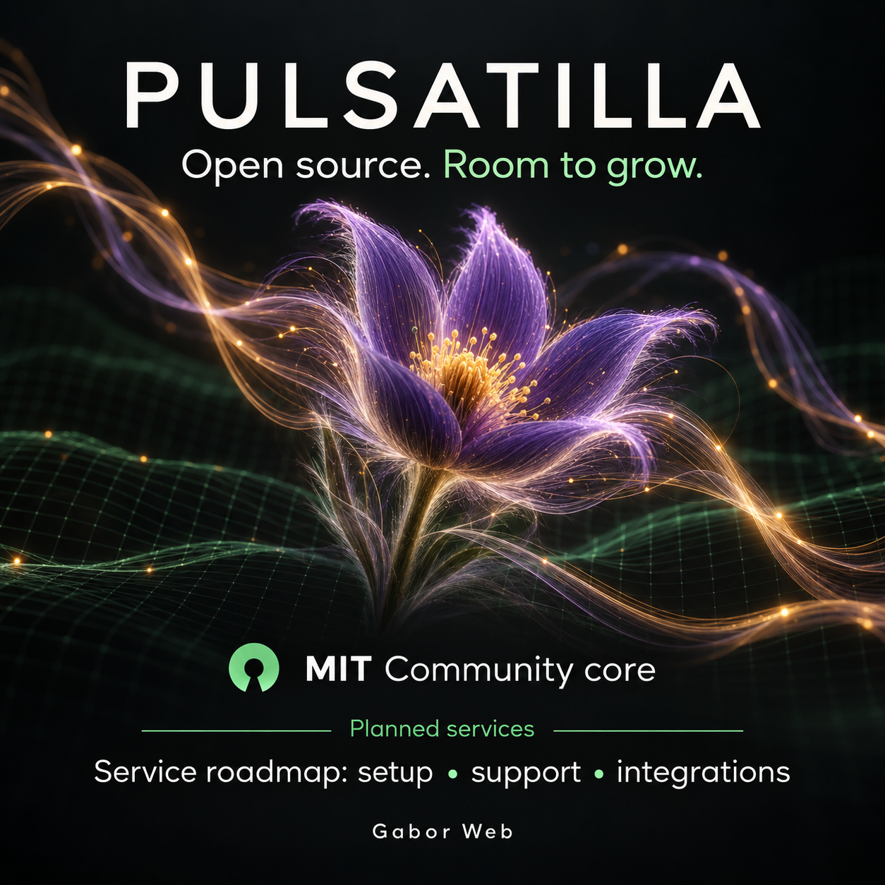
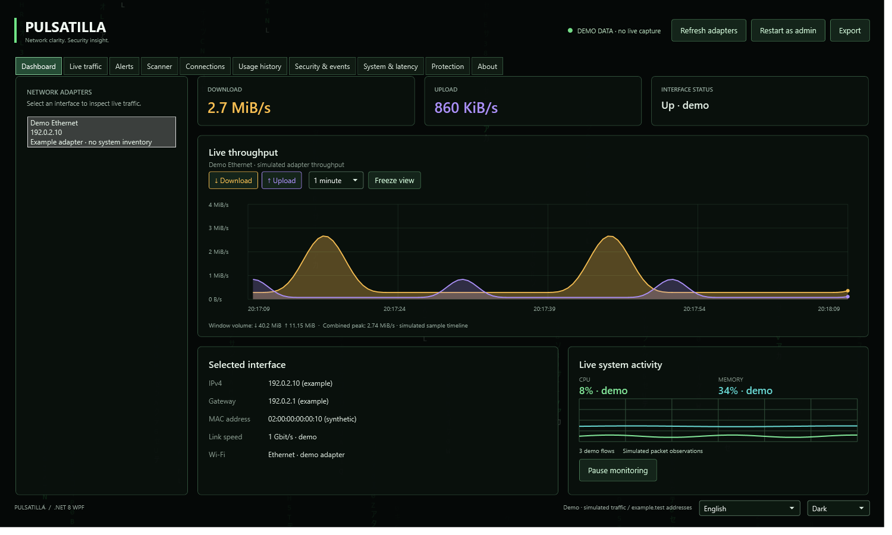
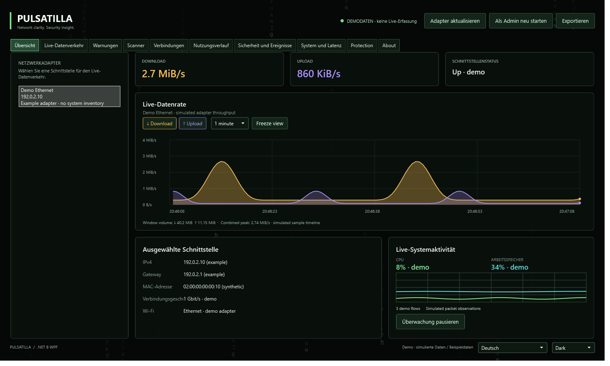
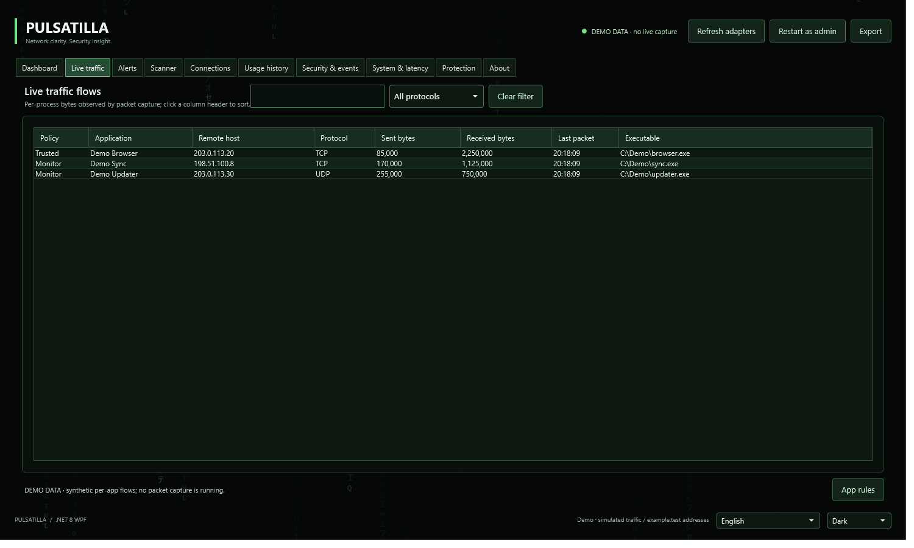
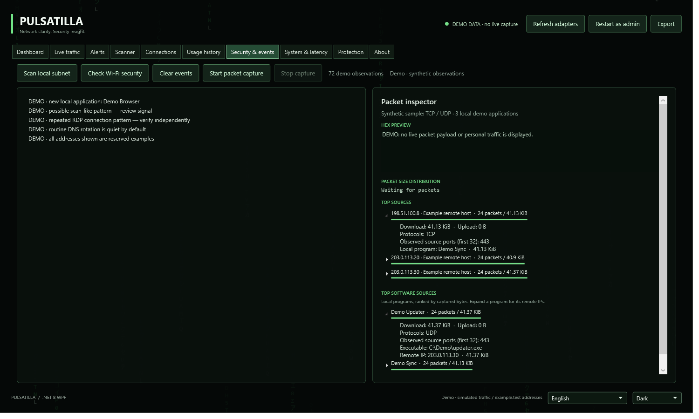
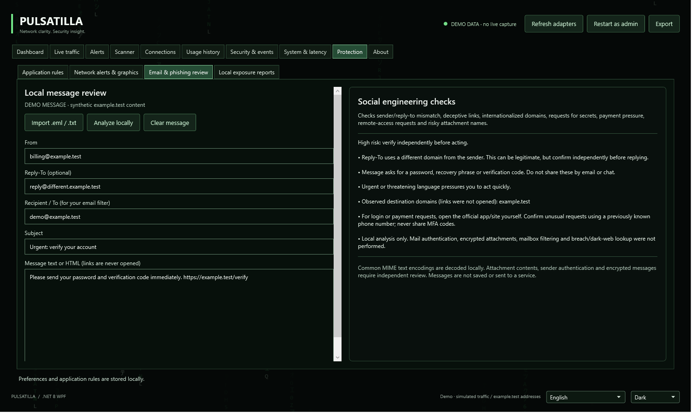
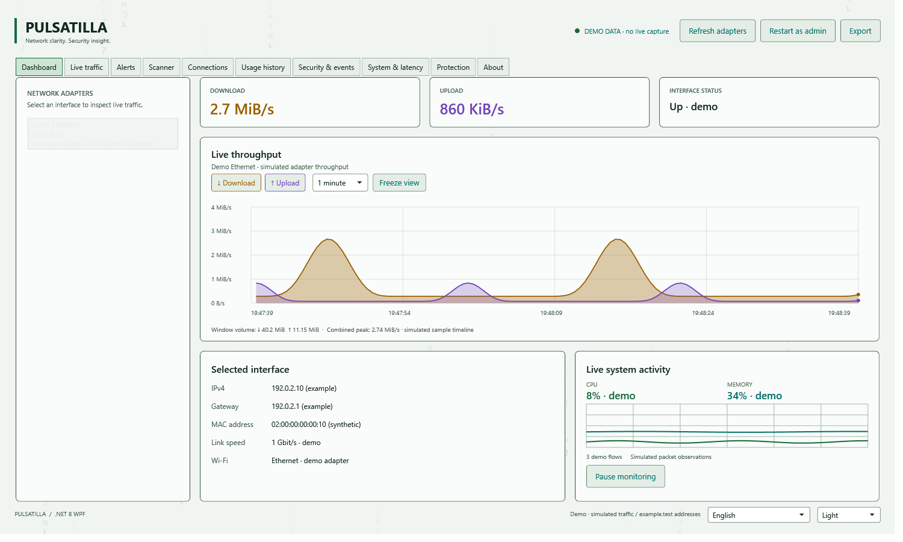

PULSATILLANETWORK CLARITY. SECURITY INSIGHT.
GABOR WEB · ENGLISH + DEUTSCH · COMMUNITY 1.1.0-beta.1
Make network activity visible.
Your publication kit for Pulsatilla: four LinkedIn/Facebook posts, two longer articles, ten PNG images and a reusable vector logo.
Development started: · Germany / Europe/Berlin.
Entwicklungsbeginn: · Deutschland / Europe/Berlin.
1.1.0-beta.1 early release and checksums · App requires .NET 8 Windows Desktop Runtime x64.
1. Choose a language and copy your text.
2. Download a PNG and attach it to your post.
3. Preview and publish in LinkedIn or Facebook.
2. Download a PNG and attach it to your post.
3. Preview and publish in LinkedIn or Facebook.
Extract the publication ZIP and open share.html locally to keep every image and text link available. No social post is sent by this page.
Community: free, open source / MITCore: separate private developmentSupport: voluntary PayPalServices: planned
Copy a post or article
Plain text, including project and PayPal links. The longer article can be used in either platform's article/post editor.
Facebook post
ENLong article · LinkedIn / Facebook
ENLinkedIn-Beitrag
DEFacebook-Beitrag
DELanger Artikel · LinkedIn / Facebook
DECommunity, support & service roadmap
MIT core & voluntary support
The Community app remains available without payment, account or activation. PayPal support helps development and does not unlock features or buy a service.
Support via PayPalPlanned paid services
Assisted setup, network diagnostics, training, support and custom integrations are the business direction. Discuss a scoped pilot with Gabor Web; prices, checkout and subscriptions are not active.
Discuss a pilot on LinkedInLater possibilities
Managed reports and opt-in provider-backed exposure monitoring are future directions. Current exposure review uses locally imported reports; no external breach service or VPN is implemented.
Read the commercial overviewMIT-Kern & freiwillige Unterstützung
Die Community-App bleibt ohne Zahlung, Konto oder Aktivierung verfügbar. PayPal-Unterstützung hilft der Entwicklung; sie schaltet keine Funktionen frei und kauft keine Leistung.
Über PayPal unterstützenGeplante kostenpflichtige Leistungen
Einrichtung, Netzwerkdiagnose, Schulung, Support und individuelle Integrationen bilden die Geschäftsidee. Ein klar abgegrenztes Pilotprojekt lässt sich mit Gabor Web besprechen; Preise, Checkout und Abonnements sind noch nicht aktiv.
Pilotprojekt auf LinkedIn besprechenSpätere Möglichkeiten
Verwaltete Berichte und freiwillige Datenleck-Prüfung über einen externen Anbieter sind spätere Entwicklungsrichtungen. Aktuell werden importierte Berichte lokal geprüft; ein externer Datenleck-Dienst oder VPN ist nicht implementiert.
Geschäftliche Übersicht lesenAttach an image
Use a Dashboard screenshot to show how the application works. Use the brand banner or service-roadmap artwork when introducing Pulsatilla and future service opportunities.
Screenshots show synthetic demo data. The three flower/network banners are AI-generated illustrations. Service artwork describes a roadmap; no paid subscription or external breach service is active.
AI-generated brand illustration · 1672 × 941
Download PNG

AI-generated illustration · planned services · 1254 × 1254
Download PNG
KI-Illustration · geplante Leistungen · 1672 × 941
Download PNG
Brand mark and wordmark · 1280 × 320
Download PNG

Actual WPF interface · synthetic demo data · 1500 × 900
Download PNG

WPF-Oberfläche · synthetische Demodaten · 1500 × 900
Download PNG

Actual WPF interface · synthetic demo data · 1500 × 900
Download PNG

Actual WPF interface · synthetic demo data · 1500 × 900
Download PNG

Actual WPF interface · synthetic example message · 1500 × 900
Download PNG

Actual WPF interface · synthetic demo data · 1500 × 900
Download PNG
Download vector logo (SVG) · SEO / GEO copy and image captions